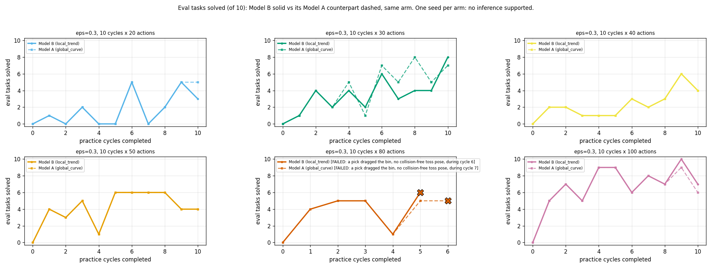
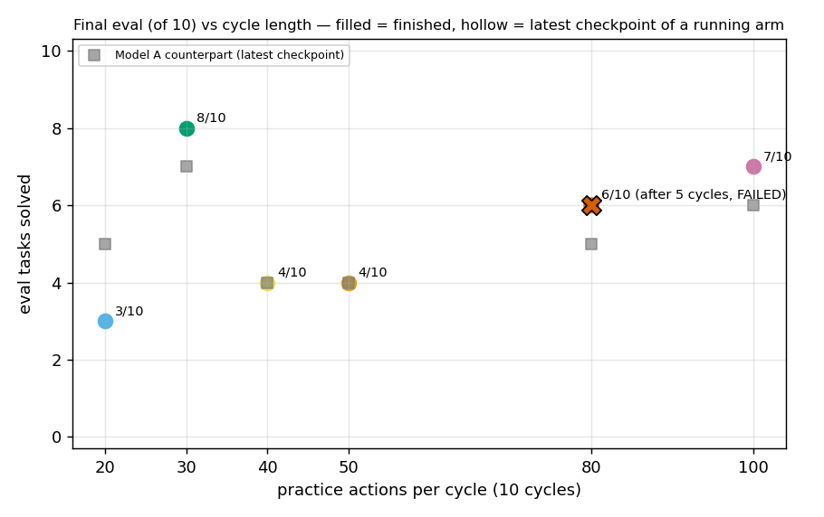

← Experiment log (committed copy). Committed snapshot of a live sub-page, taken 2026-09-27 10:30; files that were not committed are marked “not committed”.
Colour encodes actions per cycle. The 100-action arm is the matching exp10 eps=0.3 x 100 run, reused.
Failed runs (lt-eps0.3-c10-s80): plotted up to their last eval and marked with an X. Each crashed mid-practice with NoFeasibleTossDirectionError: a pick (after a failed pick) dragged the bin 14-21 cm and turned it, and at the sampled standoff every toss direction was blocked by the barrier, a wall or the room edge. This is the toss-pose feasibility check failing (no collision-free place to stand and throw), not the arm motion planner. Fix pending: recompute the feasible standoff band from the bin's live pose.
Code d7b7ba30 (PR #368 on #367), kindergarden 6a42988, kinder-baselines 427ad6c. Model B (local_trend), learning-rate decay 0.9 (the notebook's rho), grid engine, lambda=0, evidence non_epsilon, seed 0 only (n=1 per arm): no inference is supported; these are single trajectories. Colour encodes actions per cycle (not the project's arm-role colour, since every arm has the same mechanism). With n=1 there are no faint per-seed traces to draw: each line is the seed.
Before the first practice success the toss classifier is one-class, every draw takes the uninformative branch, and the epsilon coin is never flipped.
eval_curves.png]

competence_and_informed_rate.png]
learning_rate.png]
| arm | status | eval per checkpoint (of 10) | final | eval @10 cycles | AUC ckpt 0-10 | AUC all | first practice success cycle | informed | epsilon_random | uninformative | median landing err, final ckpt (m) |
|---|---|---|---|---|---|---|---|---|---|---|---|
| lt-eps0.3-c10-s20 | done | 0 1 0 2 0 0 5 0 2 5 3 | 3/10 | 3/10 | 18/110 | 18/110 | 4 | 16/30 | 1/12 | 2/47 | 0.352 |
| lt-eps0.3-c10-s30 | done | 0 1 4 2 4 2 6 3 4 4 8 | 8/10 | 8/10 | 38/110 | 38/110 | 0 | 36/80 | 2/26 | 1/13 | 0.091 |
| lt-eps0.3-c10-s40 | done | 0 2 2 1 1 1 3 2 3 6 4 | 4/10 | 4/10 | 25/110 | 25/110 | 0 | 40/112 | 6/43 | 1/18 | -0.183 |
| lt-eps0.3-c10-s50 | done | 0 4 3 5 1 6 6 6 6 4 4 | 4/10 | 4/10 | 45/110 | 45/110 | 0 | 90/133 | 4/54 | 2/23 | 0.019 |
| lt-eps0.3-c10-s80 | FAILED (bin moved by a pick; no feasible toss pose) | 0 4 5 5 1 6 | 6/10 | - | 21/60 | 21/60 | 0 | 60/106 | 2/38 | 2/37 | 0.105 |
| lt-eps0.3-c10-s100 | done | 0 5 7 5 9 9 6 8 7 10 7 | 7/10 | 7/10 | 73/110 | 73/110 | 0 | 189/280 | 6/103 | 3/47 | -0.012 |
practice_by_consultation.png]
landing_error.png]